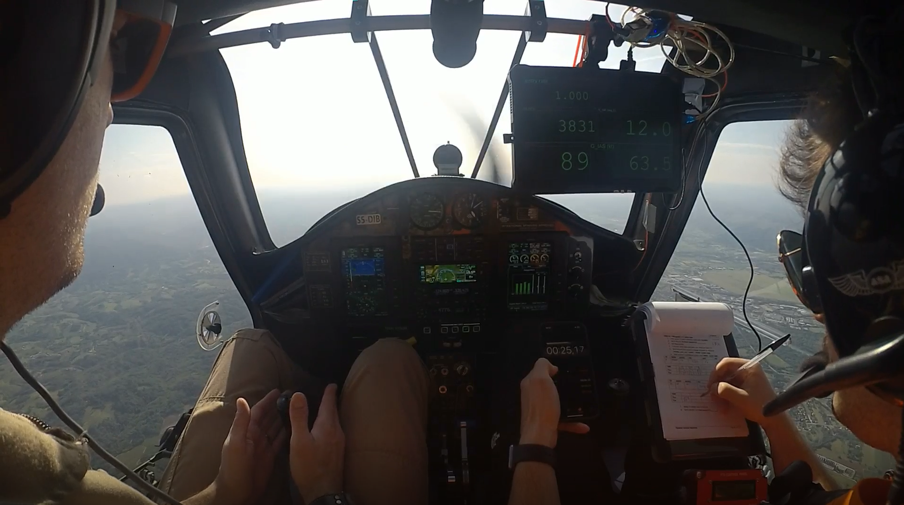
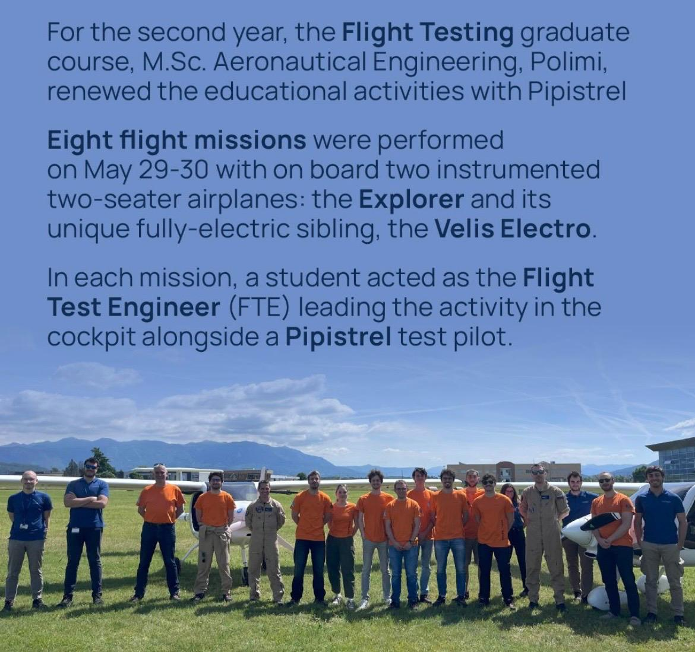
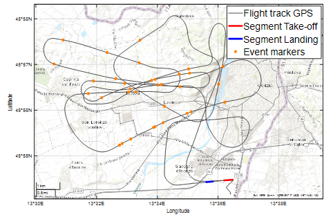
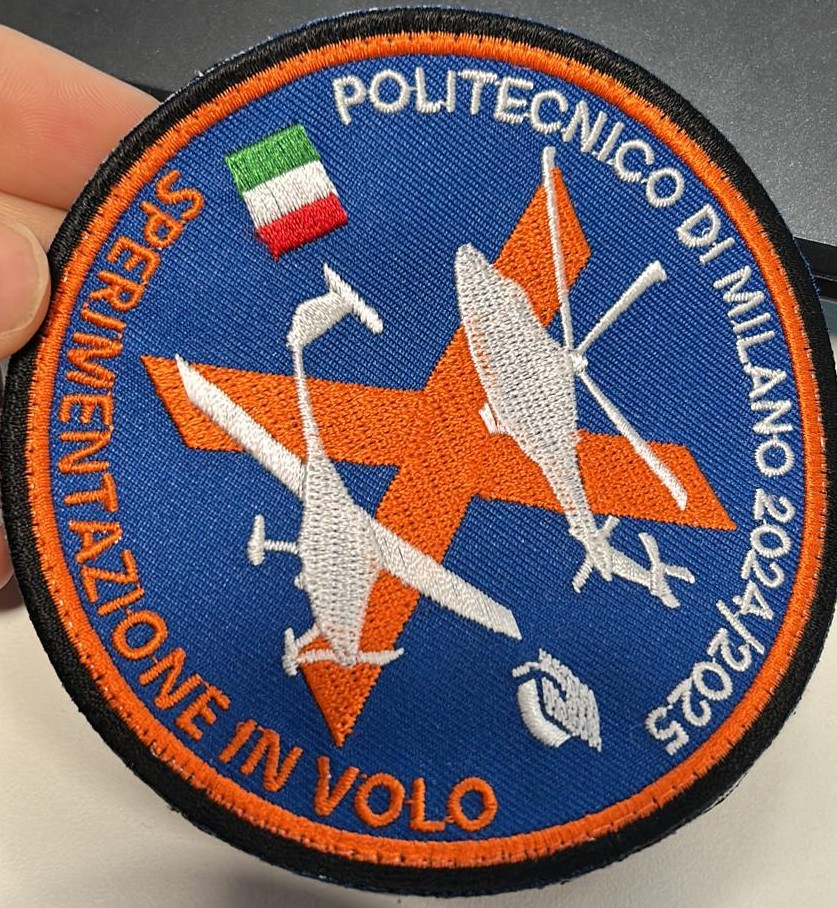

Flight Testing · Politecnico di Milano × Pipistrel Italia · May 2025
Experimental flight test campaign at Gorizia Airport: performance evaluation and longitudinal stability assessment of two light sport aircraft, one conventional and one fully electric.
Overview
As part of the Sperimentazione in Volo course at Politecnico di Milano, our team conducted a full flight test campaign in collaboration with Pipistrel Italia at Gorizia Airport (LIPG).
The campaign involved two aircraft: the Virus SW121A "Explorer", a conventional light sport aircraft powered by a Rotax 912 engine, and the Virus SW128 "Velis Electro", its fully electric counterpart — one of the first type-certified electric aircraft in the world.
All eight flight missions were completed on May 29, 2025, under VFR conditions, with calm winds and excellent atmospheric conditions — ideal for flight testing. Each student acted as Flight Test Engineer (FTE) in the cockpit alongside a Pipistrel test pilot, leading the test sequence and managing data acquisition in real time. Each flight lasted approximately 50–55 minutes.
The two aircraft flew simultaneously, with the airspace divided horizontally by the Isonzo river: the Explorer on the west side, the Velis Electro on the east side, within the Gorizia ATZ (Class G, radius 3 NM, ceiling FL50).

Flight test team — Gorizia Airport, May 2025
Location
Gorizia Airport (LIPG)
Date
May 29, 2025
Missions
8 flight missions
Flight duration
~50–55 min per aircraft
Aircraft
Virus SW121A + SW128
Conditions
VFR · calm wind · clear sky
Data acquisition
DEWESoftX + RTK GPS
Standards
ASTM F2245 · EASA CS-LSA
Test objectives
The campaign evaluated four specific performance and stability characteristics on both aircraft, following the CS-23 Amendment 4 Flight Test Guide methodology. Results were benchmarked against each aircraft's Pilot Operating Handbook (POH) and verified for compliance with CS-LSA certification criteria.
Test platforms
Virus SW121A — "Explorer"
Conventional · Rotax 912 S3 · 73.5 kW
Two-seat high-wing monoplane with carbon/glass/aramid composite structure, T-tail, tricycle gear, and constant-speed propeller. Equipped with Garmin G3X dual-display avionics and full dual controls. Certified for VFR day and night.
Virus SW128 — "Velis Electro"
Electric · E-811 Motor · 57.6 kW · 20 kWh battery
Same airframe family as the Explorer, but powered by a Pipistrel electric motor and a 345 VDC liquid-cooled battery system. One of the first type-certified electric aircraft in the world. VFR day only, with fixed-pitch three-blade composite propeller.
Data & Instrumentation
Data acquisition combined native aircraft instrumentation with supplementary Flight Test Instrumentation (FTI): a high-precision RTK GPS for ground trajectory reconstruction, a DEWESoft DAS for synchronized digital recording, a DATA-BLOCK event marker for real-time test point annotation, and a GoPro cockpit camera.
Two items originally planned were not installed on the day — the stick force sensor and the control fixture for stick-fixed phugoid tests. Despite their absence, all test objectives were successfully completed and the data were fully valid for post-processing.
Atmospheric conditions were excellent: both flights were performed in the early morning under clear sky, with wind well within the CS-23 tolerances. Post-flight data reduction followed standardized correction methods (Kimberlin, USN FTM) accounting for wind, weight, and atmospheric conditions.
The GPS flight track shown here captures the full mission profile: take-off, test area maneuvers, and landing sequence at LIPG.

GPS flight track — Gorizia Airport (LIPG), Mission 1
Gallery
